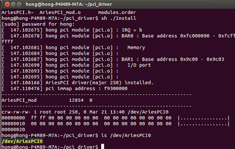
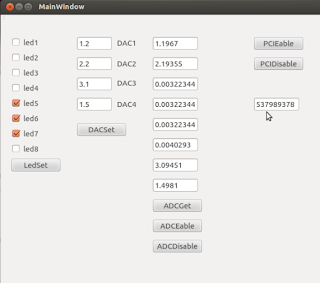

PCI Card Project Episode 4: Writing Driver and Application
Overview
After finishing the FPGA design in Episode 3, we will now develop the software side, which consists of two main parts: a Driver to interface with the hardware and an Application to allow users to control our card.
To enable the PC to communicate with the PCI card, only two key things are required:
- Vendor ID, Device ID: These identify to the operating system which driver to use for the hardware. For our card, we have set
Vendor ID = 0x1172andDevice ID = 0x0004. - Memory map: The custom specifications we defined to indicate where data must be sent/read for specific operations, matching the memory map we designed for the FPGA.
| Offset address | Function |
|---|---|
| 0x0000_0000 | Digital I/O CH1 ~ Digital I/O CH16 |
| 0x0000_0004 | Digital I/O CH1 ~ Digital I/O CH16 Mode setting (0: Input, 1: Output) |
| 0x0000_0100 ~ 0x0000_011C | ADC CH1 ~ ADC CH8 |
| 0x0000_0200 ~ 0x0000_020C | DAC CH1 ~ DAC CH4 |
| 0x0000_0210 | DAC Output Enable |
| 0x0000_0300 | LED |
| 0x0000_0400 | FPGA Version |
Steps
1. Driver Development
We will develop our driver as a Linux Kernel Module (.ko), specifically a Character Device Driver, with primary files being AriesPCI.c and AriesPCI.h.
Driver Registration
The first thing the driver must do is introduce itself to the kernel and specify which hardware it will handle via pci_get_device using our designated Vendor ID and Device ID.
// AriesPCI.c
static int pci_init(void)
{
// ...
device = pci_get_device( 0x1172, 0x0004, device );
if ( device == NULL ){
printk("AriesPCI device == NULL");
return -1;
}
// ...
}
Next, we map the PCI card's memory-mapped I/O (MMIO) region into the kernel's address space using pci_iomap so that the kernel can read and write data directly to the card.
// AriesPCI.c
ioaddr = pci_iomap(device, 0, pci_resource_len(device,0));
if (!ioaddr) {
dev_err(&device->dev, "cannot map MMIO, aborting\n");
return -EIO;
}
File Operations
The heart of a character driver is the file_operations struct, which maps standard system calls like open, read, write, or ioctl on the device file (/dev/AriesPCI0) to the corresponding functions in our driver.
// AriesPCI.c
struct file_operations AriesPCI_fops = {
.owner = THIS_MODULE,
.open = AriesPCI_open,
.release = AriesPCI_close,
.read = AriesPCI_read,
.write = AriesPCI_write,
.llseek = AriesPCI_llseek,
.unlocked_ioctl = AriesPCI_ioctl,
};
AriesPCI_read/AriesPCI_write: Responsible for reading and writing 32-bit data to/from the address set byllseek.AriesPCI_llseek: Sets the current offset address for subsequent read/write operations.AriesPCI_ioctl: A custom control channel we defined to send specific commands directly to the driver, simplifying the application code by abstracting the raw address manipulations.
IOCTL Commands
We defined various ioctl commands in AriesPCI.h for easy access by the user application.
// AriesPCI.h
#define IOCTL_READ_LED_BY_MEM 0x0
#define IOCTL_WRITE_LED_BY_MEM 0x1
#define IOCTL_DAC1_WRITE 0x20
// ... (DAC, ADC commands)
#define IOCTL_FPGA_VER_READ 0x10
#define IOCTL_DIO_MODE_WRITE 0x11
#define IOCTL_DIO_WRITE 0x12
#define IOCTL_DIO_READ 0x13
Inside AriesPCI.c, a switch statement is implemented to handle these commands:
// AriesPCI.c
long AriesPCI_ioctl(struct file *filp, unsigned int cmd, unsigned long arg)
{
unsigned int data32 = 0;
switch(cmd){
case IOCTL_FPGA_VER_READ :
data32 = ioread32(ioaddr + FPGA_VER_BASE);
if (copy_to_user((int __user *)arg, &data32, sizeof(data32)) ) {
return -EFAULT;
}
return 0;
case IOCTL_DIO_WRITE :
if (copy_from_user(&data32,(int __user *)arg,sizeof(data32))) {
return -EFAULT;
}
iowrite32(data32, ioaddr + DIO_BASE);
return 0;
// ... other cases
}
return 0;
}
Compiling and Installing the Driver
Once the code is ready, we compile the driver to obtain the AriesPCI.ko file. We then install the driver into the kernel using insmod and use chmod to allow non-root user applications to access the device file.
sudo insmod AriesPCI.ko
sudo chmod 666 /dev/AriesPCI0

2. Userspace Application
Once the driver is active, we can develop userspace applications to communicate with our PCI card. All interactions will happen through the device file named /dev/AriesPCI0.
Debugging Library
For convenience in testing and debugging, we created a simple helper library (myLib.c) wrapping the open, lseek, read, and write system calls. This allows us to read and write registers on the card easily.
// myLib.c
int reg_write(unsigned int addr, int data)
{
int fh = open("/dev/AriesPCI0", O_RDWR);
if(fh < 0){
printf("Cannot open \n");
return 1;
}
char buffer[4];
// ... pack data into buffer ...
lseek(fh, addr, SEEK_SET);
write(fh, buffer, 4);
close(fh);
return 0;
}
int reg_read(unsigned int addr)
{
int fh = open("/dev/AriesPCI0", O_RDONLY);
if(fh < 0){
printf("Cannot open \n");
return 1;
}
char buffer[4];
lseek(fh, addr, SEEK_SET);
read(fh, buffer, 4);
close(fh);
// ... unpack data from buffer ...
return (data);
}
3. Sample GUI Application

We can build a graphical application using Qt (mainwindow.cpp) which, under the hood, uses standard open, read, and write system calls to interact with /dev/AriesPCI0 as well.
Example: Reading the FPGA Version
// mainwindow.cpp
void MainWindow::on_PCIEable_clicked()
{
fh = open("/dev/AriesPCI0",O_RDWR);
// ... error handling ...
char buffer[4];
lseek(fh, FPGA_VER_BASE, SEEK_SET);
read(fh, buffer, 4);
// ... unpack data and display ...
unsigned int data = ...;
QString tempText = QString::number(data, 16);
ui->FPGA_Ver->setText(tempText);
}
Example: Configuring the DAC
When the user enters the desired voltage and clicks the DACSet button, the program converts the float value to a 12-bit integer and writes it to the base address of each DAC channel.
// mainwindow.cpp
void MainWindow::on_DACSet_clicked()
{
float val;
unsigned int data;
char buffer[4];
// DAC Channel 1
val = ui->DAC1->text().toFloat();
data = (unsigned int)((val/3.3)*4095);
// ... pack data to buffer ...
lseek(fh, DAC1_BASE, SEEK_SET);
write(fh, buffer, 4);
// ... (repeat for DAC2, DAC3, DAC4)
}
Example: Reading the ADC Values
When the ADCGet button is clicked, the program reads data from each ADC channel's register and converts it back to a voltage value to display.
// mainwindow.cpp
void MainWindow::on_ADCGet_clicked()
{
unsigned int data;
char buffer[4];
float val;
// ADC Channel 1
lseek(fh, ADC1_BASE, SEEK_SET);
read(fh, buffer, 4);
// ... unpack data from buffer ...
data = ...;
val = (((float)data/4095))*3.3;
ui->ADC1->setText(QString::number(val));
// ... (repeat for other ADC channels)
}
Note
All example code can be downloaded at: https://github.com/wichayen/ariesboard